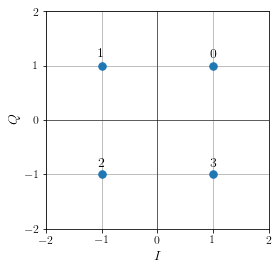
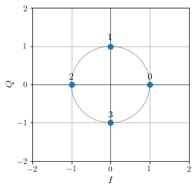
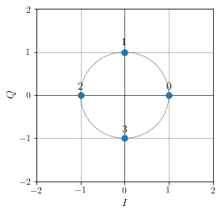
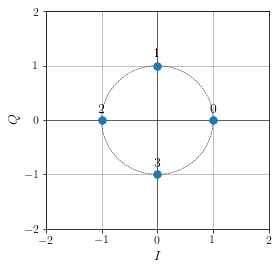
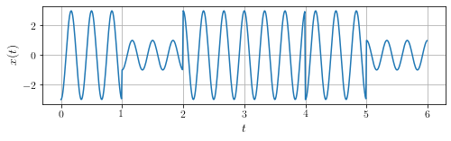
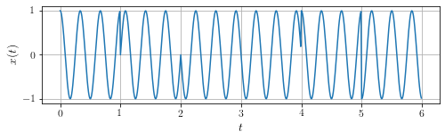
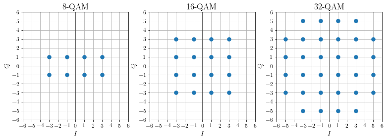

Constellations¶
import numpy as np
import numpy.random as rnd
import matplotlib.pyplot as plt
import matplotlib.patches as mpatches
plt.style.use('../../_static/graph.mplstyle')
# Définition des codes
def qam(N):
c = []
if N == 4:
c = np.array([[+1, +1], [-1, +1], [-1, -1], [+1, -1]])
if N == 8:
for x in np.linspace(-3, 3, 4):
for y in np.linspace(-1, 1, 2):
c.append([x, y])
if N == 16:
for x in np.linspace(-3, 3, 4):
for y in np.linspace(-3, 3, 4):
c.append([x, y])
if N == 32:
for x in np.linspace(-5, 5, 6):
for y in np.linspace(-5, 5, 6):
if np.abs(x) != 5 or np.abs(y) != 5:
c.append([x, y])
return np.array(c)
codes = {
"4qam" : qam(4),
"4ask" : np.array([ [-3,0], [-1,0], [+1,0], [+3,0] ]),
"4psk" : np.array([ [1,0], [0,1], [-1,0], [0,-1] ]),
"8psk" : np.array([[np.cos(t),np.sin(t)] for t in np.arange(0,2*np.pi,np.pi/4)])
}
for c in ["4qam", "4ask", "4psk"]:
# Amplitudes
x = codes[c][:,0]
y = codes[c][:,1]
# Initialisation du graphe
xmax = np.max(codes[c]) + 1
xmin = - xmax
fig, ax = plt.subplots(1,1, figsize=(4,4))
ax.set_facecolor('white')
# Axes
plt.plot([xmin-1, xmax+1], [0, 0], 'k', linewidth=.5)
plt.plot([0, 0], [xmin-1, xmax+1], 'k', linewidth=.5)
# Cercle (si PSK)
if "psk" in c:
p = mpatches.Circle((0, 0), 1, fill=False, edgecolor="black", linestyle="--", linewidth=.5)
ax.add_artist(p)
# Constellation
plt.plot(x, y, '.', markersize=15)
# Symboles associés
d = (xmax-xmin)/30
for n in range(len(x)):
plt.text(x[n], y[n]+d, n, ha="center") # Nombre en décimal
# Axes
plt.xlabel("$I$")
plt.ylabel("$Q$")
plt.xticks(np.arange(xmin, xmax+1))
plt.yticks(np.arange(xmin, xmax+1))
plt.xlim([xmin, xmax])
plt.ylim([xmin, xmax])
# Enregistrement et affichage
plt.savefig(f"code-{c}.svg", transparent=False)
plt.show()

 


# Signal de la modulation 4-ASK
modulations = ["4ask", "4psk"]
for c in modulations:
msg = [0, 1, 3, 3, 0, 2]
# Création du signal
tk = np.arange(0,1,1e-2)
t = np.arange(0,len(msg),1e-2)
fp = 3
z = []
a = codes[c][:,0]
b = codes[c][:,1]
for k in range(len(msg)):
ak = a[int(msg[k])]
bk = b[int(msg[k])]
zk = ak*np.cos(2*np.pi*fp*tk) + bk*np.sin(2*np.pi*fp*tk)
z = np.append(z, zk)
# Affichage
fig, ax = plt.subplots(1,1, figsize=(8,2))
plt.plot(t, z)
plt.xlabel("$t$")
plt.ylabel("$x(t)$")
# Enregistrement et affichage
plt.savefig(f"signal-{c}.svg")
plt.show()


fig, ax = plt.subplots(1,3, figsize=(13,4))
k = 0
xmin, xmax = -6, 6
for M in [8, 16, 32]:
# Amplitudes
code = qam(M)
x = code[:,0]
y = code[:,1]
# Axes
ax[k].plot([xmin-1, xmax+1], [0, 0], 'k', linewidth=.5)
ax[k].plot([0, 0], [xmin-1, xmax+1], 'k', linewidth=.5)
# Constellation
ax[k].plot(x, y, '.', markersize=15)
# Axes
ax[k].set_xlabel("$I$")
ax[k].set_ylabel("$Q$")
ax[k].set_title(f"{M}-QAM")
ax[k].set_xticks(np.arange(xmin, xmax+1))
ax[k].set_yticks(np.arange(xmin, xmax+1))
ax[k].set_xlim([xmin, xmax])
ax[k].set_ylim([xmin, xmax])
k += 1
# Enregistrement et affichage
plt.savefig("code-qam.svg")
plt.show()

# Seed
rng = np.random.default_rng(2)
print(rng.normal(0, 1, size=(5)))
# Code de Gray
def gray_code(n):
def gray_code_recurse (g,n):
k=len(g)
if n<=0:
return
else:
for i in range (k-1,-1,-1):
char='1'+g[i]
g.append(char)
for i in range (k-1,-1,-1):
g[i]='0'+g[i]
gray_code_recurse (g,n-1)
g=['0','1']
gray_code_recurse(g,n-1)
return g
g = gray_code(3)
c = "8psk"
# Amplitudes
x = codes[c][:,0]
y = codes[c][:,1]
# Initialisation du graphe
xmax = np.max(codes[c]) + 1
xmin = - xmax
fig, ax = plt.subplots(1,2, figsize=(9,4))
for k in range(2):
# Axes
ax[k].plot([xmin-1, xmax+1], [0, 0], 'k', linewidth=.5)
ax[k].plot([0, 0], [xmin-1, xmax+1], 'k', linewidth=.5)
# Constellation
if k==1:
for z in range(15):
ax[k].plot(
x+rng.normal(0, .15, size=len(x)),
y+rng.normal(0, .15, size=len(x)),
'.', markersize=10, color="tab:blue")
ax[k].plot(1.05,-.4, '.', markersize=10, color="tab:red", zorder=10)
else:
ax[k].plot(x, y, '.', markersize=10)
# Symboles associés
d = (xmax-xmin)/30
for n in range(len(x)):
if k==0:
ax[k].text(x[n]+d, y[n]+.6*d, f"{n:0>3b}", fontsize=16, ha="center", color="tab:blue") # Nombre en binaire
ax[k].text(x[n]+d, y[n]+4*d, g[n], fontsize=16, ha="center", va="top", color="tab:green") # Nombre en Gray
# Axes
ax[k].set_xlabel("$I$")
ax[k].set_ylabel("$Q$")
ax[k].set_xticks(np.arange(xmin, xmax+1))
ax[k].set_yticks(np.arange(xmin, xmax+1))
ax[k].set_xlim([xmin, xmax])
ax[k].set_ylim([xmin, xmax])
# Enregistrement et affichage
plt.savefig("constellation-reception.svg")
plt.show()
[ 0.18905338 -0.52274844 -0.41306354 -2.44146738 1.79970738]